Configura Windows Server Core 2019, para que pueda ser accedido mediante clave pública/privada, desde equipos GNU/Linux y Windows mediante SSH.
Nos pide que podamos entrar de Debian a Debian con clave pública o privada.
- Lo repetimos de Debian a Debian con clave pública o privada.
- Lo repetimos de Debian a Windows con clave pública o privada.
- Lo repetimos de Windows a Debian con clave pública o privada.
- Lo repetimos de Windows a Windows con clave pública o privada.
Con esto, comenzamos los apartados correspondientes.
1. De Debian a Debian con clave pública o privada
Para este apartado, deberemos tener 2 máquinas Linux creadas y configuradas correctamente en Proxmox por ejemplo. Previamente, haré un ip a para ver las ips de las máquinas y no confundirlas: Debian 1 (server):
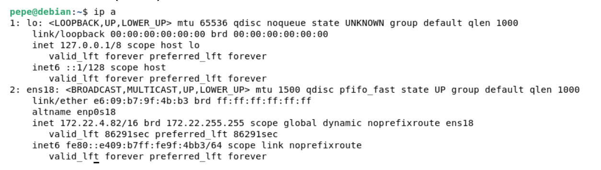
Debian 2 (cliente):
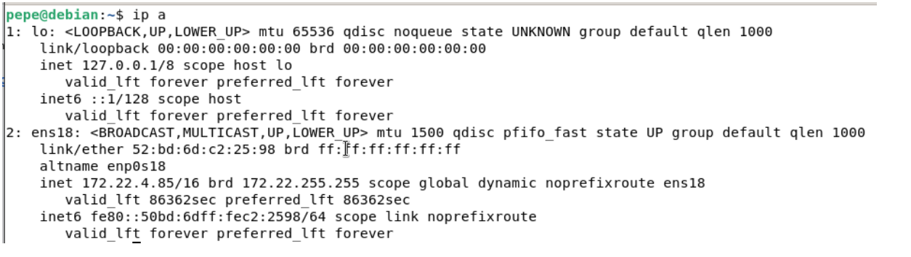
Tras crearlas, deberemos entrar en una de esas máquinas e instalar un servidor ssh. Para ello, entraremos en la máquina 1 que tiene ip 172.22.4.82. Para acceder a ella tenemos que utilizar el servicio ssh. Para comprobar el estado del servicio ssh, tenemos que ejecutar el siguiente comando:
systemctl status ssh
Si no lo tenemos instalado, instalamos el servicio ssh con el siguiente comando:
sudo apt-get install openssh-server
Y repetimos el primer comando y vemos que el servicio si está activo. Tras esto, configuramos el servicio para que usando claves y eso se hará modificando el siguiente fichero con el siguiente comando:
nano /etc/ssh/sshd_config
Cuando ya estemos dentro modificamos estas 3 cosas:
- Desactivar la autenticación por contraseña. Esto lo haremos simplemente para descomentar esta línea.
- Desactivamos el acceso como root ya que los servidores no suelen dejar el acceso como root. Descomentamos la línea y escribimos lo siguiente.
- Activar la public key para entrar remotamente por clave al servidor.
Los parámtros son estos y los tendremos que dejar de la siguiente manera (descomentado):
PasswordAuthentication yes
PermitRootLogin no
PubkeyAuthentication yes
Tras esto, restauramos el servicio con este comando, systemctl restart ssh y ya tenemos configurado el servidor. Cuando ya tengamos esto hecho, es cuando entonces entramos en la máquina debian cliente para poder acceder con clave pública al servidor. Pero, previamente a esto deberemos seguir estos pasos:
Primero, generamos un par de claves con el comando ssh-keygen en la máquina cliente, básicamente en Debian 2.
ssh-keygen
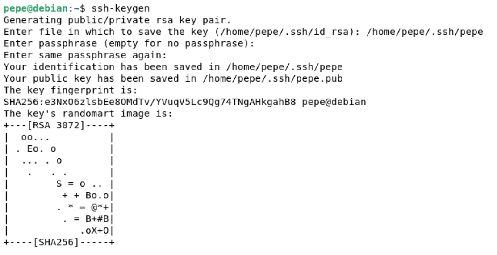
Cuando ya tengamos las claves creadas en el direcrotio .ssh/ pasamos a la configuración del ssh.
Creamos la clave dando la ruta y contraseña a las claves (aunque se puede crear las claves sin contraseña). Comprobamos que está en la ruta debida:
ls .ssh/
Segundo a esto, deberemos copiar la clave pública al servidor con el siguiente comando:
ssh-copy-id usuario@servidor
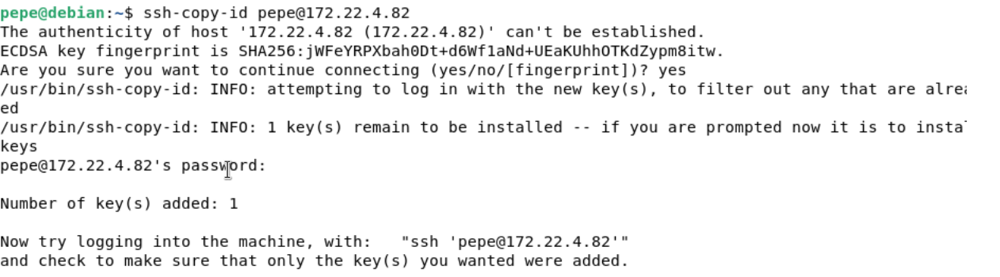
Nos pedirá la contraseña del usuario pepe que se encuentra en el servidor y vemos que se ha compartido la clave pública correctamente.
Por último, comprobamos que entra desde el cliente debian2 pepe al servidor debian1 pepe con nuestra clave privada.
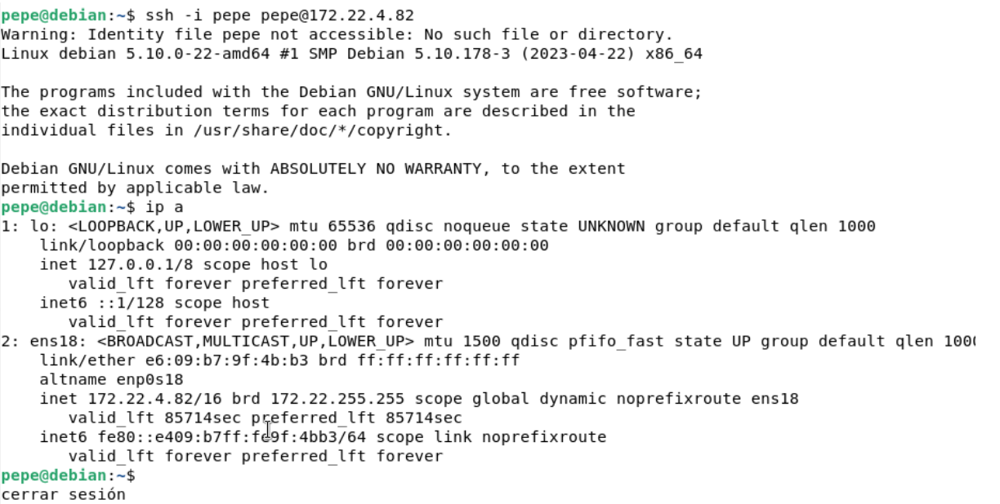
Para comprobar que está bien hacemos un ip a y vemos la ip creada. Incluso podemos desde la máquina debian2 (cliente) crear una carpeta en el servidor debian1 y ver desde la máquina 1 que está creada.
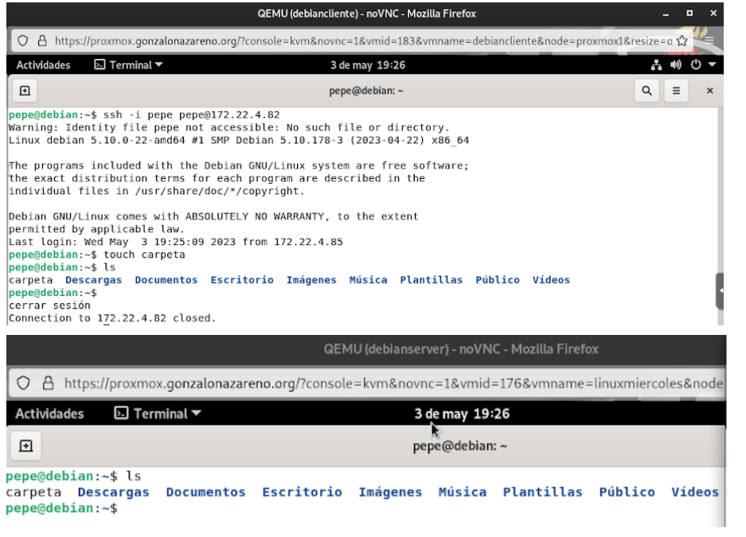
Con esto ya hemos terminado la conexión ssh con máquinas Debian entre sí, poniendo una máquina como servidor.
2. De Debian servidor a Windows con clave pública o privada
En este apartado, deberemos tener creadas en proxmox o openstack 2 instancias; la máquina deberá ser un servidor y la máquina windows un cliente. Con esto, comentado debemos seguir los pasos ya comentados.
Previamente haré un ip a o ipconfig para ver las ips de las máquinas y no confundirlas: Debian server:
Windows:
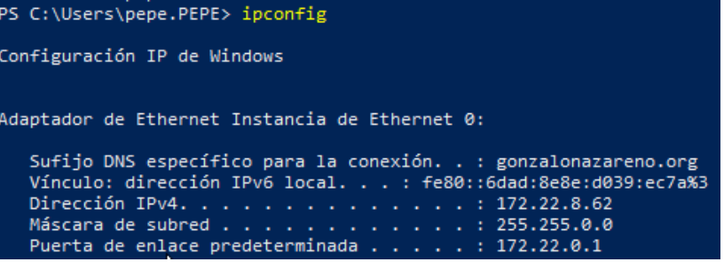
Como ya tenemos instalado el servidor ssh en la máquina debian, generamos un par de claves con el comando ssh-keygen en la máquina cliente windows. Le pediremos que la genere en la ruta C:\Users[nombredeusuario.nombredominio]/.ssh/[nombreclave]
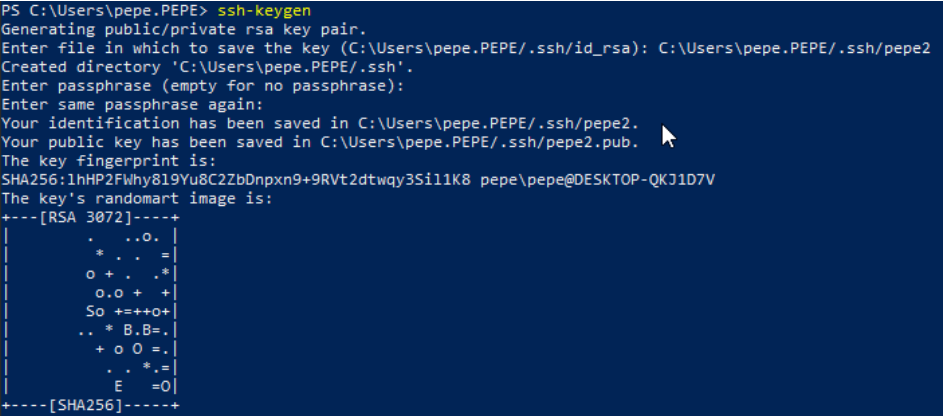
Cuando creamos las claves, vemos que están correctamente ubicadas con el comando ls o dir.
ls -\.ssh\
Tras esto, deberemos copiar la clave pública al servidor Debian y eso se hará con el siguiente comando:
scp /ruta/absoluta/donde/se/encuentra/la/clave.pub usuario@ipdelservidor:/directorio/donde/lo/quieres/dejar
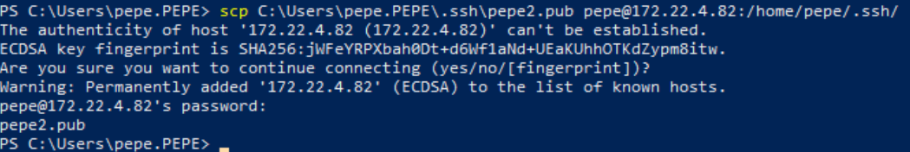
Nos pedirá la contraseña del usuario pepe que se encuentra en el servidor y vemos que se ha compartido la clave pública correctamente. Y para ver que se ha enviado correctamente, vemos el directorio /.ssh en la máquina servidor de debian ejecutando el comando:
ls .ssh/
Por último, comprobamos la conexión desde la máquina windows al servidor ssh de debian con el siguiente comando:
ssh -i /ruta/clave usuario@ipdelservidor
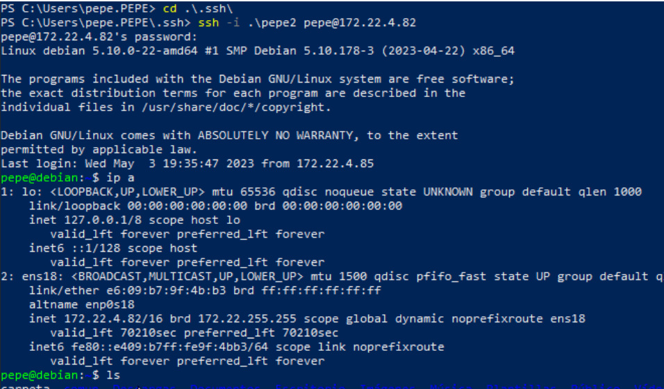
Y vemos que hemos accedido correctamente.
3. De Windows servidor a Debian con clave pública o privada
Previamente haré un ip a o ipconfig para ver las ips de las máquinas y no confundirlas:
Debian cliente:
Windows server:
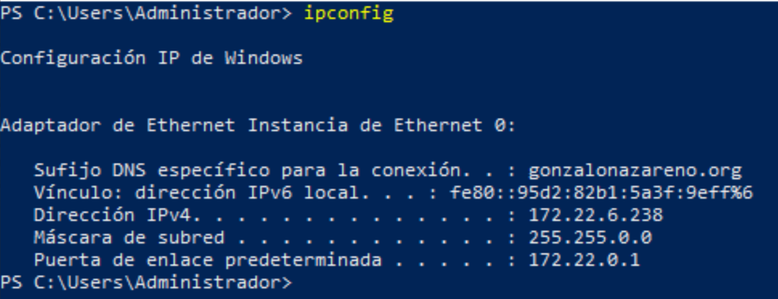
Primero, deberemos instalar el servicio de sshd (sshd en Windows = ssh en Debian) en el servidor windows y para ello seguiremos los siguientes pasos mediante powershell:
- Primero comprobamos que el cmdlet de sshd está disponible con el siguiente comando:
Get-WindowsCapability -Online | Where-Object Name -like 'OpenSSH*'
Podemos ver que está instalado el servicio sshd pero para los clientes, no para configurarlo como servidores y por ello lo vamos a instalar.
- Para instalar los servicios de tanto de cliente como de servidor ejecutaremos los siguientes comandos:
Add-WindowsCapability -Online -Name OpenSSH.Client~~~~0.0.1.0 (cliente)
Add-WindowsCapability -Online -Name OpenSSH.Server~~~~0.0.1.0 (servidor)
Por último, activamos el servicios ssh con el siguiente comando:
Start-Service sshd
- También, para dejar el servicio siempre activo, ponemos el siguiente comando:
Set-Service -Name sshd -StartupType 'Automatic'
Y con esto ya tenemos configurado perfectamente. Tras esto, repetimos los pasos para la compartición de claves.
Por ello, generamos un par de claves con el comando ssh-keygen en la máquina cliente debian y comprobamos el directorio .ssh si tiene dentro la clave.
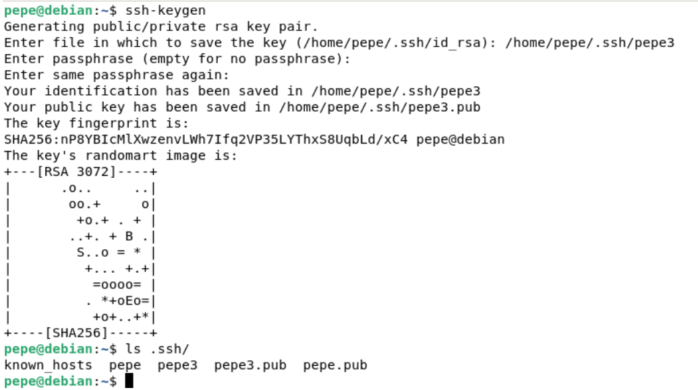
Tras esto, deberemos copiar la clave pública al servidor Windows y eso se hará con el siguiente comando:
scp /ruta/absoluta/donde/se/encuentra/la/clave.pub usuario@ipdelservidor:/directorio/donde/lo/quieres/dejar
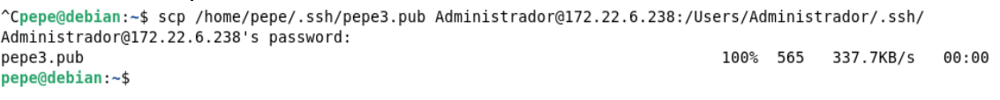
Para comprobar que se ha enviado y vamos al servidor y listamos el directorio .ssh:
ls .ssh/
Y vemos que se ha enviado la clave correctamente comprobando la conexión mediante claves desde el cliente debian al servidor windows.
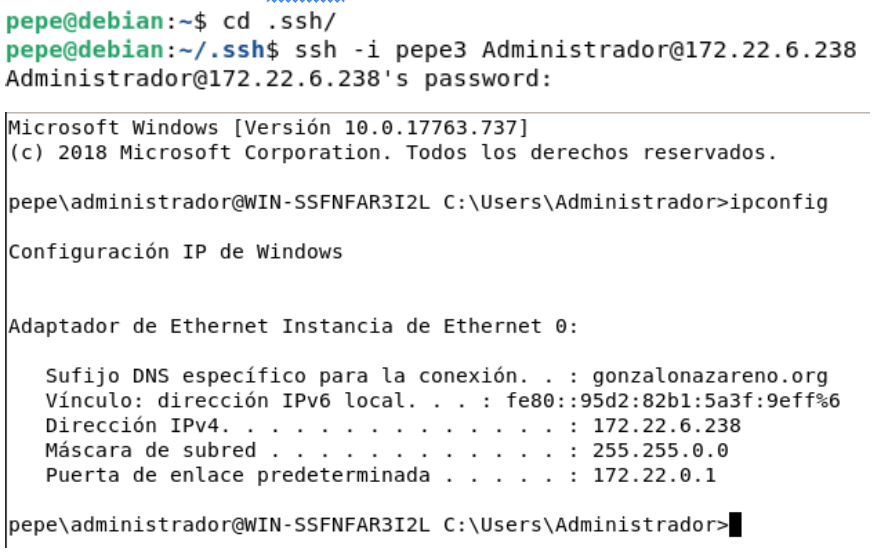
Comprobamos que está perfectamente configurado de un cliente debian a un servidor Windows.
4. De Windows servidor a windows con clave pública o privada
Previamente haré un ip a o ipconfig para ver las ips de las máquinas y no confundirlas:
Windows cliente:
Windows server:
Como ya tenemos instalado el servidor ssh en la máquina Windows server, generamos un par de claves con el comando ssh-keygen en la máquina cliente windows.
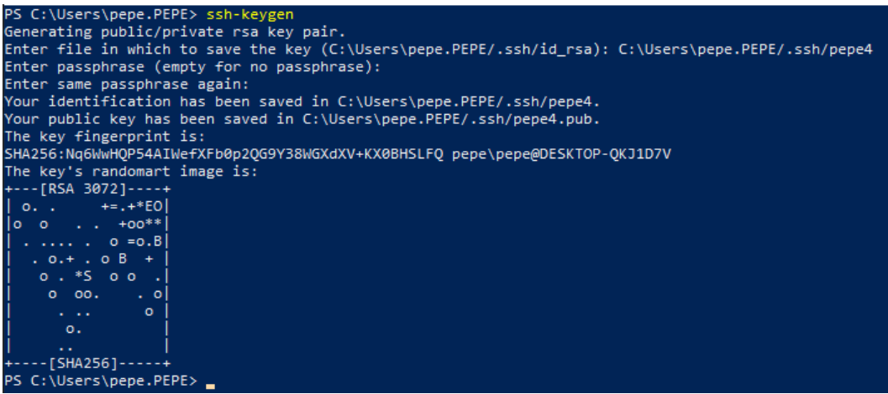
Tras esto, deberemos copiar la clave pública al servidor Windows y eso se hará con el siguiente comando:
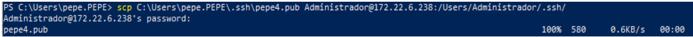
Para comprobar que se ha enviado y vamos al servidor y listamos el directorio .ssh:
ls .ssh/
Y vemos que se ha enviado la clave correctamente comprobando la conexión mediante claves desde el cliente Windows al servidor Windows.
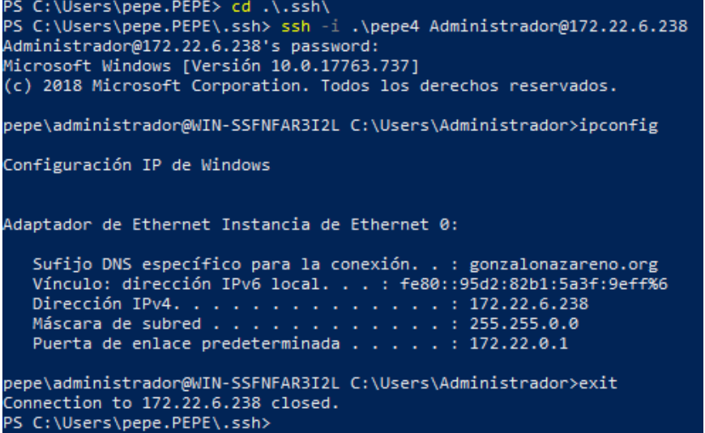
Comprobamos que está perfectamente configurado de un cliente Windows a un servidor Windows. Con esto, ya hemos configurado todos los casos posibles de ssh entre máquinas Debian y máquinas Windows.